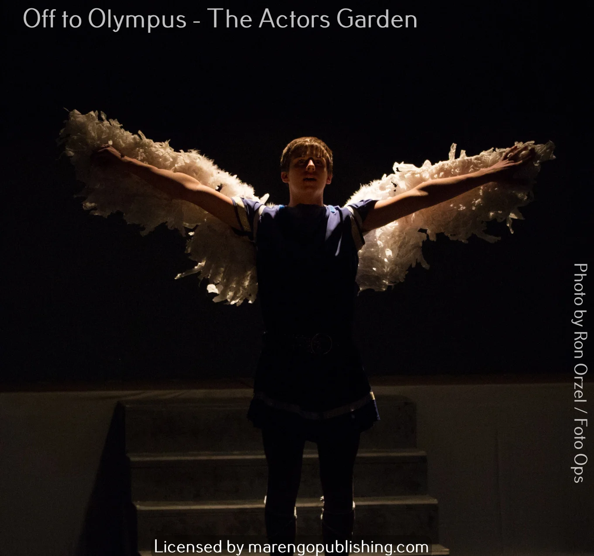
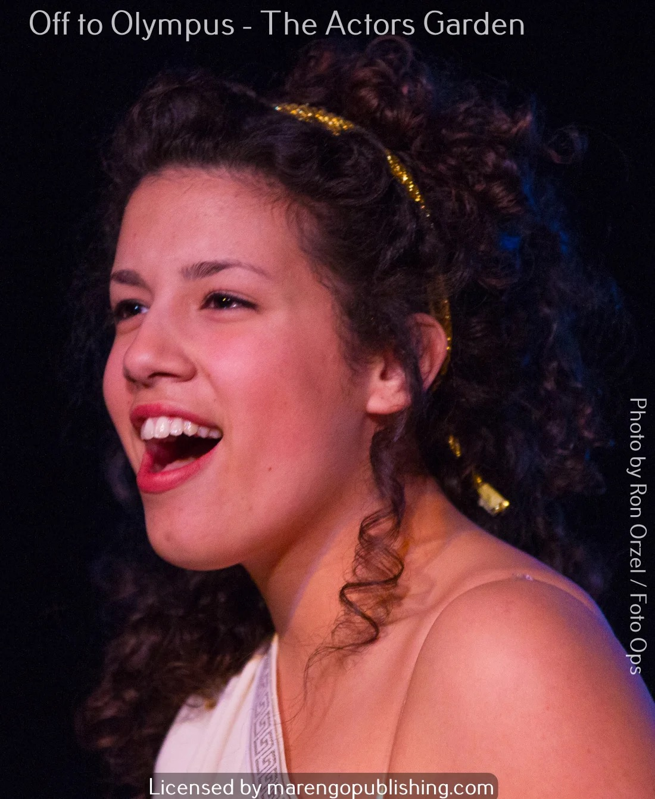
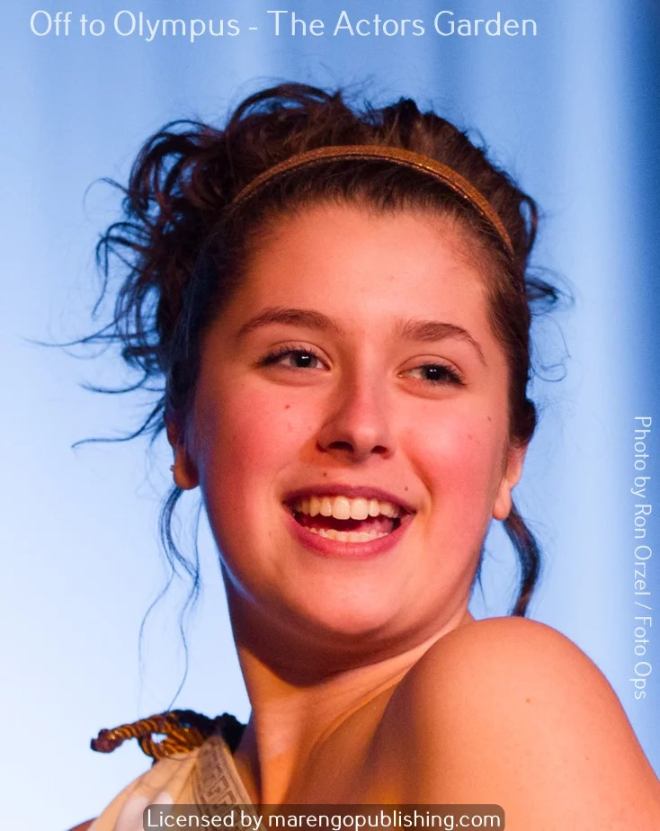
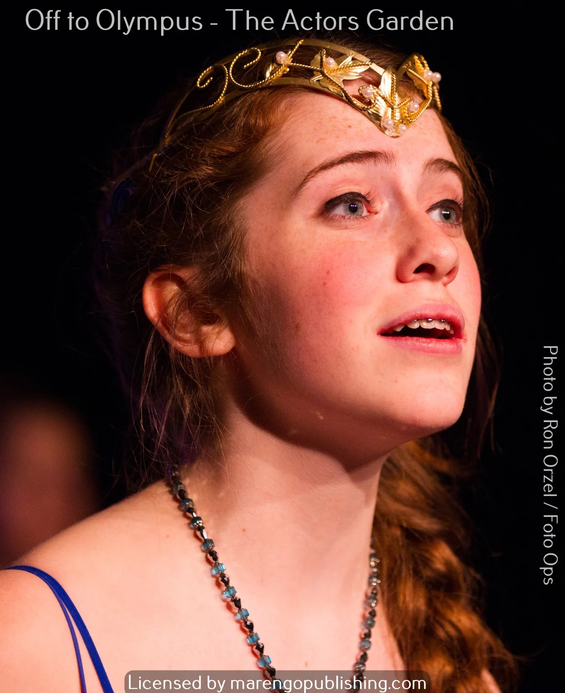
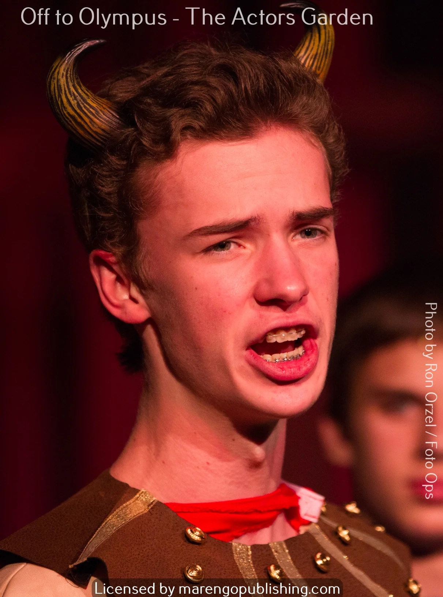
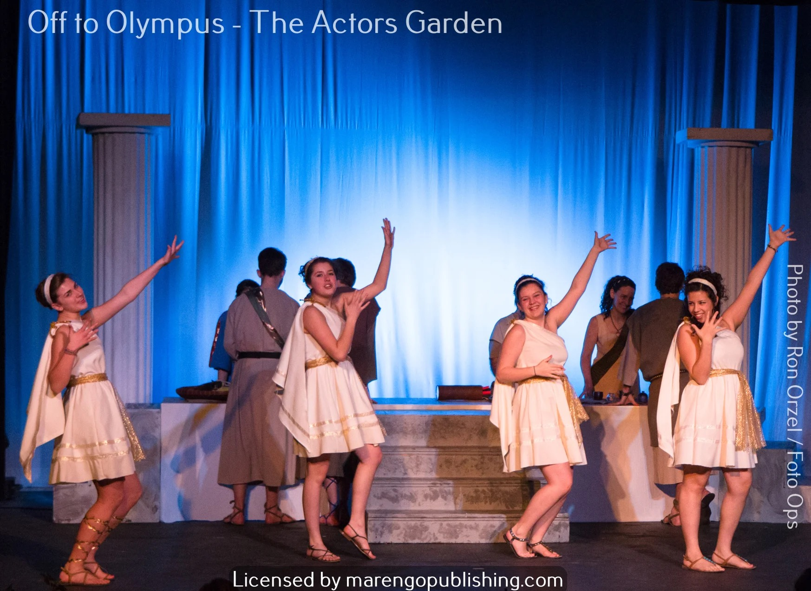
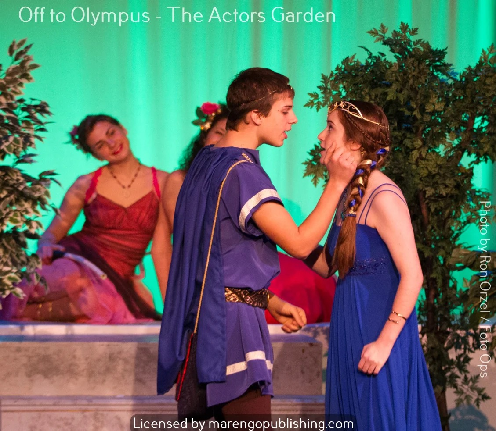

Off to Olympus
A rollicking reimagining of the legends of Greek mythology
By two-time Richard Rodgers Award winner Dave Hudson
7th grade and up (ages 11+)
25+ roles
90 min
$399
Ages7th grade and up (ages 11+)
Cast25+ roles
Runtime90 min + intermission
Songs14
LevelIntermediate Advanced
License$399
About the Show
A bold, comedic reimagining of Greek mythology for the stage. Off to Olympus takes classic myths — gods, heroes, monsters, and all — and puts them in the hands of young performers with room to be big, physical, and funny. With 25 speaking roles plus a flexible chorus and a gender ratio that leans 3:1 toward girls, this is an ideal choice for middle and high school programs looking for challenging material with mythological scope and genuine comedy.
Why This Works for Young Performers
Flexible casting 25 speaking roles plus flexible chorus. Gender ratio leans approximately 3:1 toward girls.
Curriculum-ready source material Based on Greek mythology — connects naturally to classroom learning.
Right level of challenge Challenging material that rewards experienced performers.
Built-in intermission Gives young performers and audiences a natural break.
Curriculum Connections
Pair this show with classroom learning:
- Social Studies — Ancient Greece
- Language Arts — mythology and archetypes
- World History — classical civilizations
Details
| Book & Lyrics | Dave Hudson |
|---|
| Music | Mark Sutton-Smith |
|---|
| Based On | Greek mythology |
|---|
Your Production Kit
- ✓ Complete script (printable PDF — unlimited copies for your cast)
- ✓ Piano/vocal score
- ✓ Vocal lead sheets for every song
- ✓ Backing tracks for rehearsal and performance
- ✓ Video recording and YouTube rights included
- ✓ No script rentals. No returns. You keep everything.
Frequently Asked Questions
- Is this show appropriate for middle school?
- Yes. Off to Olympus is designed for 7th grade and up. The humor, themes, and vocal demands are calibrated for adolescent performers.
- Can I use this to complement a mythology curriculum unit?
- Absolutely. Many directors pair Off to Olympus with a classroom mythology unit. The show brings familiar myths to life in a way that deepens students' understanding of the source material.
- Why does the gender ratio lean toward girls?
- Many Greek mythology roles (goddesses, heroines, mythical figures) are female. The show was designed with this in mind, reflecting the reality that many youth programs have more female than male participants.
- Do I need live musicians?
- No. Complete backing tracks are included. The piano/vocal score is also provided if you have instrumentalists.
- This seems more challenging than your other shows. Is it?
- It is our most ambitious show — longer runtime, more songs, more complex staging possibilities. But the material is designed to challenge students at the right level, not overwhelm them. Most programs with experienced middle or high school casts handle it beautifully.
Production Photos
Photos by Ron Orzel / Foto Ops







Read the Script Free
Tell us your name and organization. We'll send the full script within 24 hours — no commitment, no credit card.
Request Free Perusal
You Might Also Like

Just So Beginner Friendly
Rudyard Kipling's beloved stories brought to life on stage
Music by Leah Okimoto
- Ages
- 3rd grade and up
- Cast
- 25+ roles
- Runtime
- 70 min + int.
- Level
- Beginner Friendly
animals
folklore
storytelling
Kipling

Mark Twain's Hannibal, MO reimagined from Becky's perspective
Music by Mark Sutton-Smith
- Ages
- 4th grade and up
- Cast
- 25+ roles
- Runtime
- 80 min + int.
- Level
- Intermediate
American literature
adventure
friendship
courage